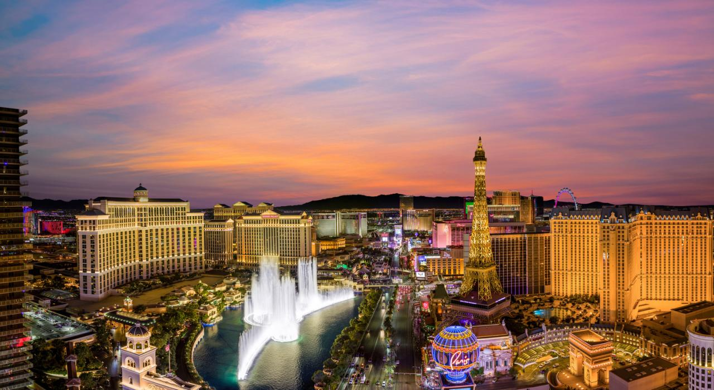
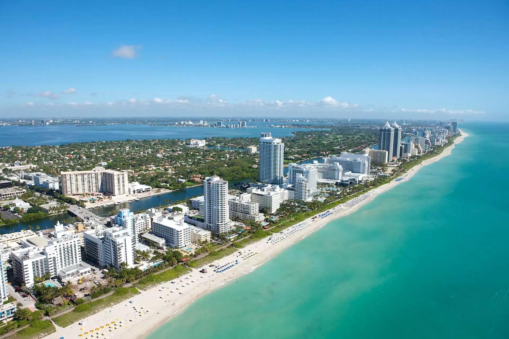
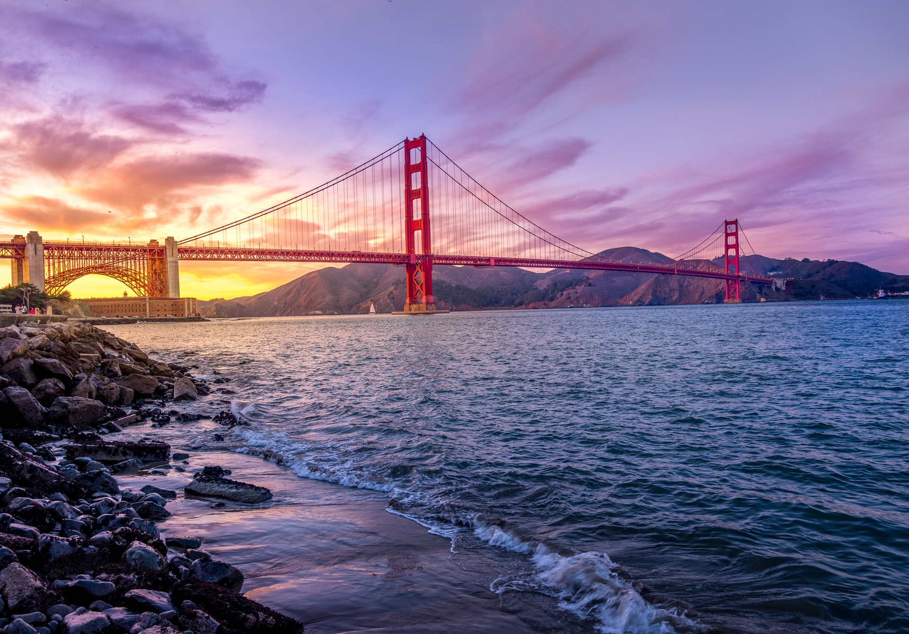
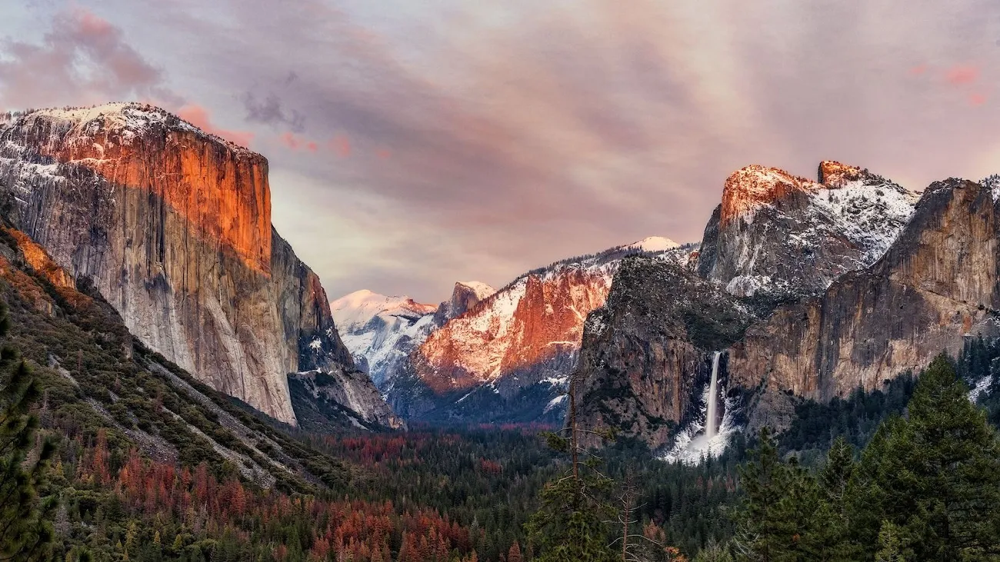

Nowy Jork
Nowy Jork to miasto, które nigdy nie zasypia. Znajdziesz tu Central Park, Times Square, Empire State Building i Statuę Wolności.

Nowy Jork to miasto, które nigdy nie zasypia. Znajdziesz tu Central Park, Times Square, Empire State Building i Statuę Wolności.
Miasto gwiazd i kina. Znajdziesz tu Hollywood Walk of Fame, znak Hollywood i Venice Beach.

Miasto kasyn i rozrywki. Najsłynniejsze atrakcje to Las Vegas Strip, Fremont Street i fontanny Bellagio.
Słoneczne plaże, Ocean Drive i dzielnica Art Deco to wizytówki Miami.
Miasto mgły i mostu Golden Gate. Warto odwiedzić Fisherman's Wharf, Alcatraz i Lombard Street.
W USA znajduje się wiele parków narodowych, m.in. Grand Canyon, Yellowstone, Yosemite i Everglades.
